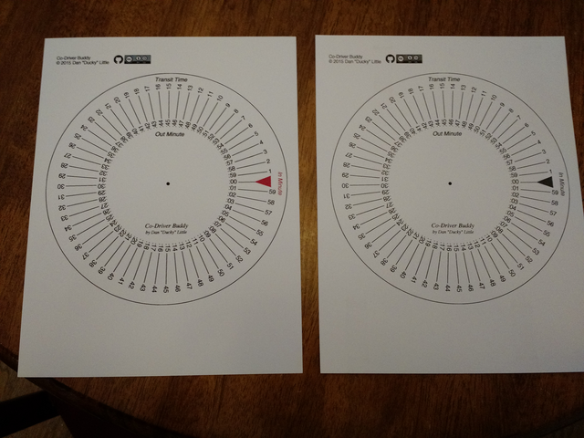
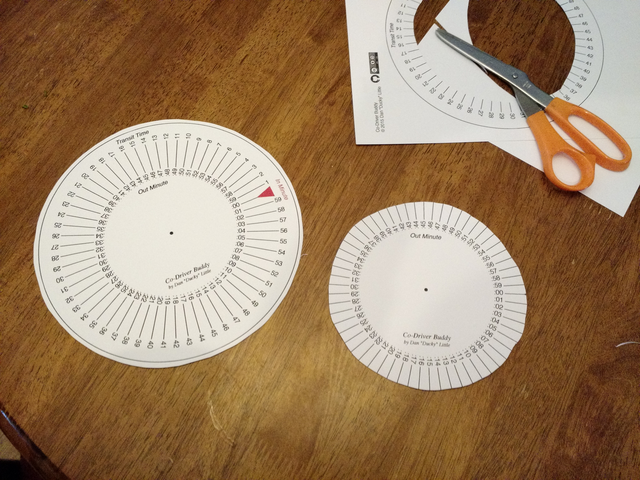
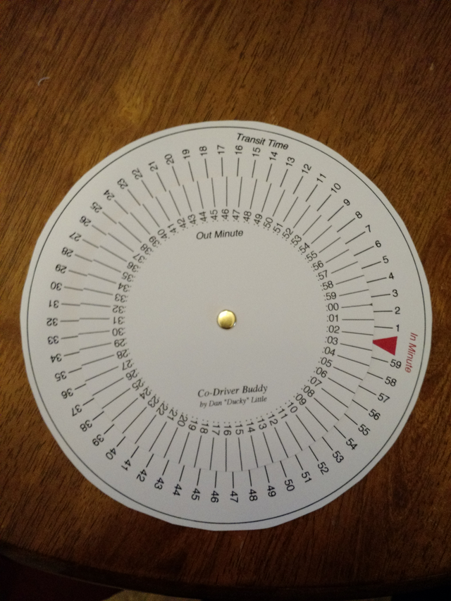

Co-Driver Buddy
© 2015 Dan "Ducky" Little
© 2015 Dan "Ducky" Little

Co-Driver Buddy is a handy tool for co-driver's in rallies to calculate their in-times based on their transit and out-times.
I have not put a lot of time in stylizing this page. Sorry to those looking for that. This does show the three steps necessary to make your own Co-Driver Buddy.
I used a white card stock here. Only one was printed in colour. That one will be used as the base.
Click here to open the page with the wheel on it!

Someone else is probably better at cutting out circles than I am.

I used a basic paper tack.
